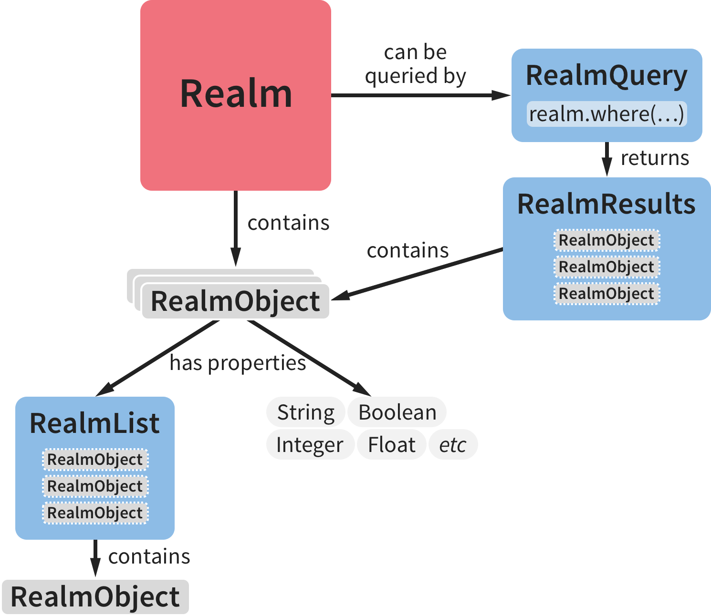

Quick start

- {@link io.realm.Realm}
The Realm database. The storage and transactional manager of your object
persistent store. It is in charge of creating and removing instances of your RealmObjects, querying, and
performing transactions.
Read more.
- {@link io.realm.RealmConfiguration}
A configuration object that is used to setup a specific Realm instance.
Read more.
- {@link io.realm.RealmObject}
The super class of all objects (models) that are to be stored in Realm. A Java object must extend
{@link io.realm.RealmObject} in order to be considered a RealmObject.
Read more.
- {@link io.realm.RealmList}
A List that is used in
RealmObjects to model one-to-many relationships with other RealmObjects.
Read more.
- {@link io.realm.RealmQuery}
An object that encapsulates a query as defined through Realms fluent query interface. Queries are executed
using either the {@link io.realm.RealmQuery#findAll}, {@link io.realm.RealmQuery#findFirst} or their variants.
Read more.
- {@link io.realm.RealmResults}
The result set of an executed RealmQuery for a given Realm. RealmResults are live,
auto-updating
views into the underlying data, which means results never have to be re-fetched.
Read more.